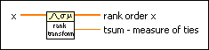

Rank Transformation VI
Owning Palette: Hypothesis Testing VIs
Requires: Full Development System
Finds the rank order of each element in the x input and returns the order of each element in the rank order x output. For all tied rank values, the mean rank replaces the rank returned.
Rank transformations often are used to test hypotheses on data when an underlying distribution is unknown.

 Add to the block diagram Add to the block diagram |
 Find on the palette Find on the palette |